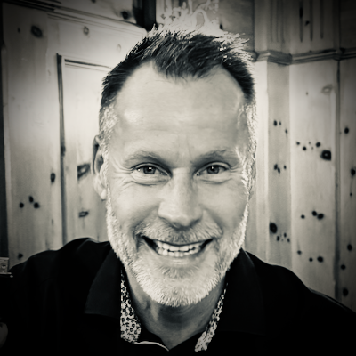

TEAMET BAKOM SYATT
Vi som driver detta
Vi är ett litet team med ett stort och härligt nätverk av fantastiska människor. Den där toppen som vi siktar mot har vi fortfarande framför oss – och vi gör vårt bästa för att alltid försöka vara våra bästa jag. Nyfikna, engagerade och genuint intresserade av hur vi kan hjälpa varandra framåt.

Jonas Woxberg
Founding Partner
Jonas är verksam inom finansbranschen. Han har under mer än 20 år arrangerat ledarseminarier i Schweiz och Österrike. Inbiten tennisspelare och skidåkare. Alltid glad och positiv.
jonas.woxberg@syatt.net
Jacob Bergström
Founding Partner
Jacob är entreprenör och senior organisationskonsult inom HR och Management. Inbiten tennisspelare och skidåkare. Alltid glad och positiv.
jacob.bergstrom@syatt.net